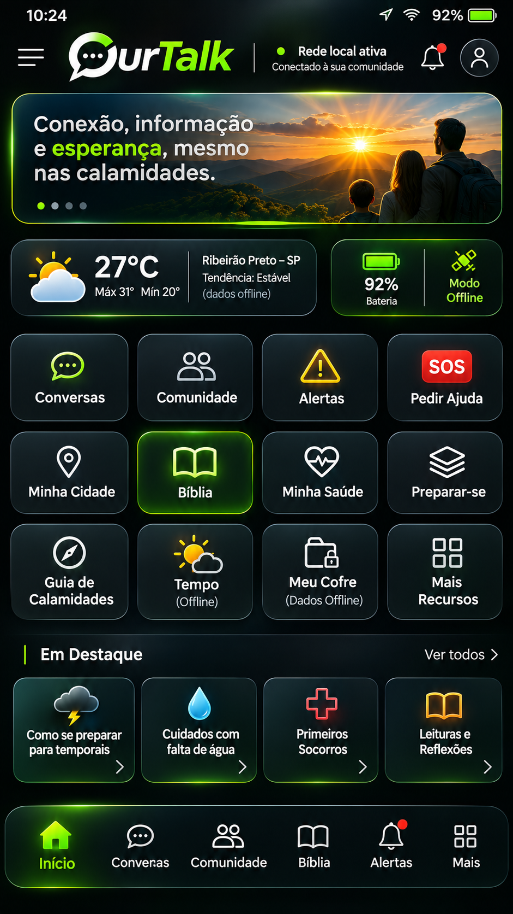

Conversar e encontrar apoio
Mensagens entre aparelhos próximos, contatos e pedidos de ajuda, com indicação clara do estado de entrega.
COMUNICAÇÃO LOCALTECNOLOGIA A SERVIÇO DAS PESSOAS
Comunicação, informação e cuidado para que ninguém enfrente momentos difíceis sozinho. Conheça o OurTalk.
Gratuito por princípio. Aberto por natureza. Humano por escolha.

Arte conceitual original · funções em desenvolvimento
01 / POR QUE EXISTIMOS
Um apagão muda a rotina em segundos. Encontrar informação, falar com alguém ou saber onde buscar apoio pode se tornar difícil.
O OurTalk nasce para ajudar antes e durante esses momentos. Estamos desenvolvendo uma plataforma que reúne comunicação entre aparelhos, conteúdo salvo e ferramentas de preparação em uma experiência simples e acolhedora.
Projeto em desenvolvimento — aplicativo ainda não disponível.
02 / UM APOIO, MUITAS POSSIBILIDADES
Recursos planejados para cuidar do que importa. A disponibilidade dependerá das etapas de desenvolvimento e dos testes em aparelhos reais.
Mensagens entre aparelhos próximos, contatos e pedidos de ajuda, com indicação clara do estado de entrega.
COMUNICAÇÃO LOCALMapas e informações salvas sobre hospitais, abrigos, água e pontos de recarga, com fonte e data de atualização.
ATLAS OFFLINEBiblioteca, busca e assistente local para consultar os conteúdos disponíveis no aparelho, mesmo sem internet.
CONHECIMENTO ACESSÍVELUm cofre planejado para guardar cópias de documentos, com proteção e acesso controlado pelo usuário.
PRIVACIDADEFicha de emergência com alergias, medicamentos e contatos. Você escolhe quais informações disponibilizar.
SAÚDE E CUIDADOPlanejamento de energia, checklists e orientações para ajudar famílias a se preparar com antecedência.
AUTONOMIAComunicação local exige aparelhos compatíveis e proximidade. O OurTalk não garante entrega de pedidos de ajuda nem substitui os serviços de emergência.
POR DENTRO DO OURTALK
Explore os conceitos das telas. Esta é uma apresentação visual do aplicativo planejado, com dados fictícios, sem comunicação ou pedidos de ajuda reais.
O PROJETO COMPLETO
O OurTalk reúne comunicação, informação pessoal e preparação. Cada área será desenvolvida e testada por etapas.
Contatos, mensagens diretas e grupos. Comunicação local entre aparelhos compatíveis, com indicação de envio e entrega. Retransmissão será avaliada em testes.
Pedidos de apoio, localização opcional e acompanhamento do recebimento. Acesso direto, sem depender da IA. Nenhuma entrega será presumida sem confirmação.
Mapas offline, hospitais, abrigos, água, alimentos e pontos de recarga. Origem, última atualização e situação conhecida de cada informação. Previsão do tempo previamente baixada, com horário de atualização e validade; sem atualização em tempo real quando offline.
Consulta por texto e voz aos conteúdos locais, com fontes. Modelos compatíveis com o aparelho. Busca tradicional disponível mesmo sem IA generativa.
Biblioteca offline, Bíblia opcional com busca e favoritos, guias, conteúdos de preparação e primeiros socorros. A tradução bíblica dependerá de licença de distribuição adequada. Pacotes de conhecimento separados do modelo de IA e atualizados quando possível.
Cópias de documentos protegidas, acesso controlado e backup criptografado. Recuperação em caso de perda do aparelho faz parte do planejamento. A aceitação de cópias depende da instituição.
Ficha de emergência, alergias, medicamentos, registros e contatos. Compartilhamento somente do que a pessoa autorizar, sem exposição automática dos documentos.
Checklists, água, alimentação, energia e plano familiar. No site: calculadora ampliada, guias de equipamentos e comparativos com fonte e data quando disponíveis.
Informes, relatos locais, pontos de apoio e voluntariado. Informações comunitárias diferenciadas de dados oficiais, com critérios de revisão ainda a desenvolver.
Privacidade, permissões, acessibilidade, armazenamento, economia de energia e gerenciamento de pacotes offline. Clareza sobre o que está salvo e o que precisa atualizar.
Comunicação e recursos essenciais no aparelho.
Guias, ferramentas, doações e acompanhamento público.
Atlas, fontes verificáveis e pacotes para consulta offline.
Para transformar cada uma dessas áreas em realidade,
precisamos construir com a comunidade.
03 / ANTES DE PRECISAR
O cuidado começa hoje. Explore uma estimativa simples de energia para manter seus equipamentos essenciais funcionando durante um apagão.
Ajude a construir essas ferramentas ↗Referências: 15 Wh por celular/dia e 4 h de iluminação/dia. Eficiência de 85% e reserva de 20%. Valores ilustrativos; confira o consumo real e a potência dos equipamentos.
04 / CONSTRUÇÃO ABERTA
Identidade, experiência, planejamento e apresentação pública do projeto.
Validar comunicação local, mapas, IA e proteção dos dados em aparelhos reais.
Núcleo Android, busca offline, biblioteca e comunicação direta.
Testes comunitários, novos recursos, mais cidades e avaliação para iOS.
Esta é a ordem de trabalho prevista. Ainda não há data de lançamento definida.
05 / CONSTRUA COM A GENTE
Sua contribuição ajuda a transformar essa ideia em uma ferramenta de apoio para pessoas e comunidades.
As doações são voluntárias. O projeto foi planejado para ser gratuito, sem anúncios, sem venda de dados e sem funcionalidades pagas.
Essas são as frentes previstas de aplicação dos recursos. A prestação de contas será publicada nesta página conforme houver movimentação.
Use a chave abaixo no aplicativo do seu banco. Você escolhe o valor.
As contribuições ao OurTalk serão recebidas na conta da OurWorld. Antes de confirmar o Pix, confira no banco o beneficiário vinculado ao CNPJ acima.
Copiar a chave não realiza uma doação. A transferência é concluída somente no seu banco. Não solicitamos senha nem dados bancários neste site.
COMPROMISSO COM QUEM APOIA
Ainda não. O OurTalk está na etapa de fundação. Os recursos apresentados são planejados e serão liberados após desenvolvimento e validação.
A conta indicada para recebimento é da OurWorld, com a chave Pix CNPJ 32.928.642/0001-41. Confira os dados apresentados pelo banco antes de transferir.
Esta seção receberá os relatórios de arrecadação, aplicação de recursos e evolução do projeto. Nenhum relatório financeiro foi publicado nesta versão. Não divulgaremos dados pessoais dos doadores.
Sim, essa é uma diretriz do projeto. O repositório inicial já foi criado e está privado durante a organização do projeto. A abertura pública e a licença de uso ainda serão definidas.
Esta versão não possui cadastro, formulário de coleta nem ferramentas de publicidade ou análise. O simulador calcula no navegador e não envia seus valores. O provedor de hospedagem pode manter registros técnicos de acesso.
Estar junto faz toda a diferença.
Vamos construir esse futuro. ↗